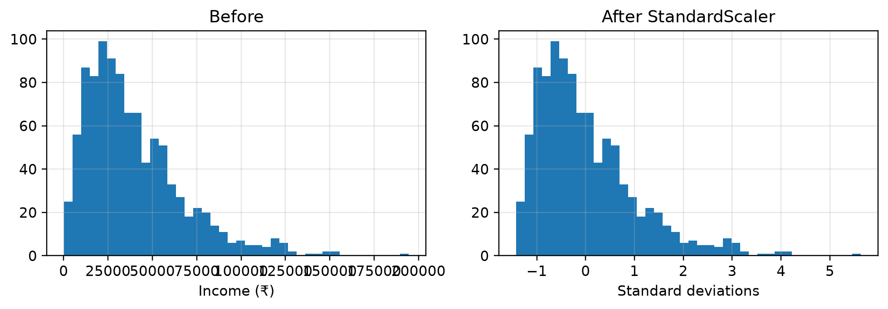

The one idea to take away:split your data before you transform it. Everything else in this chapter is mechanical. That one rule is the difference between a score you can trust and a score that is a fiction, and it is the most common serious mistake in student projects.
7.1 🎯 Learning outcomes
By the end of this chapter you can:
Explain why columns measured in different units confuse an algorithm.
Apply MinMaxScaler, StandardScaler, RobustScaler, Normalizer and Binarizer, and say what each one does.
Say which of them a given algorithm actually needs.
Turn text categories into numbers with label, one-hot and ordinal encoding.
Split data into training and test sets with train_test_split.
Explain data leakage, show its effect on a score, and prevent it with a Pipeline.
Many algorithms measure distance between rows. A column with big numbers dominates that distance, whatever it actually means.
Consider two customers:
Age (years)
Income (₹)
Customer A
25
50,000
Customer B
55
51,000
To a human these people are very different — thirty years apart. To an algorithm measuring straight-line distance:
the age difference contributes 30
the income difference contributes 1,000
Income is 33 times more influential, purely because rupees are counted in thousands and years are not. The algorithm has not decided income matters more. It has been misled by a unit.
Tip🧠 Analogy — judging a competition in different units
Two judges score a contest. One scores out of 10. The other scores out of 1,000. Add the scores together and the second judge decides the winner every time — not because their opinion is better, but because their scale is bigger.
Scaling is making both judges score out of 10 before you add them up.
8.1.1 Demo 1 — watch a unit decide the answer
import numpy as npimport pandas as pdpeople = pd.read_csv("datasets/three_people.csv", index_col="person")print(people)def distance(p, q):return np.sqrt(((p - q) **2).sum())print("\nRAW — who is A most similar to?")print(f" A to B: {distance(people.loc['A'], people.loc['B']):,.0f}")print(f" A to C: {distance(people.loc['A'], people.loc['C']):,.0f}")print(" → B, because their incomes are close. Age was ignored.")scaled = (people - people.min()) / (people.max() - people.min()) # squash both to 0–1print("\nSCALED — the same question:")print(f" A to B: {distance(scaled.loc['A'], scaled.loc['B']):.2f}")print(f" A to C: {distance(scaled.loc['A'], scaled.loc['C']):.2f}")print(" → C, a 26-year-old. Now age counts as much as income.")
age income
person
A 25 50000
B 55 51000
C 26 90000
RAW — who is A most similar to?
A to B: 1,000
A to C: 40,000
→ B, because their incomes are close. Age was ignored.
SCALED — the same question:
A to B: 1.00
A to C: 1.00
→ C, a 26-year-old. Now age counts as much as income.
Same data, opposite answers. Nothing was corrected — a unit was simply stopped from voting twice.
8.2 2. Which algorithms care
Not every algorithm needs scaling. Knowing which is which saves work and prevents pointless transformations.
Algorithm
Needs scaling?
Why
k-Nearest Neighbours
yes
it is entirely built on distance
K-Means clustering
yes
distance again (Session 10)
Support Vector Machines
yes
distance to a boundary
Linear / logistic regression
usually
helps the fitting process, and makes coefficients comparable
Neural networks
yes
training is unstable otherwise
Decision trees
no
it asks “is age > 30?”, and that answer does not change with units
Random forests
no
many trees, same reasoning
8.2.1 Demo 2 — proving trees do not care
import numpy as npfrom sklearn.tree import DecisionTreeClassifierfrom sklearn.neighbors import KNeighborsClassifierfrom sklearn.preprocessing import StandardScalerfrom sklearn.model_selection import train_test_splitcv = pd.read_csv("datasets/customer_value.csv")X = cv[["age", "income"]].valuesy = cv["high_value"].values # the truth depends on income onlyXtr, Xte, ytr, yte = train_test_split(X, y, test_size=0.3, random_state=0)Xtr_s = StandardScaler().fit(Xtr).transform(Xtr)Xte_s = StandardScaler().fit(Xtr).transform(Xte)for name, model in [("Decision tree", DecisionTreeClassifier(random_state=0)), ("k-Nearest Neighbours", KNeighborsClassifier())]: raw_score = model.fit(Xtr, ytr).score(Xte, yte) scaled_score = model.fit(Xtr_s, ytr).score(Xte_s, yte)print(f"{name:<22} unscaled {raw_score:.3f} scaled {scaled_score:.3f} "f"difference {scaled_score-raw_score:+.3f}")
The tree is unchanged. k-NN improves. That is the table above, measured rather than asserted.
9 Part B — The five transformers
9.1 3. The five tools
Scikit-learn provides five transformers. Four work down columns; one works across rows. That distinction confuses everybody once.
Tool
What it produces
Works on
Use when
MinMaxScaler
every value between 0 and 1
columns
you want a fixed, bounded range
StandardScaler
mean 0, standard deviation 1
columns
the default choice
RobustScaler
centred on the median, scaled by the IQR
columns
outliers are present and you kept them
Normalizer
each row rescaled to length 1
rows
the proportions in a row matter, not the totals
Binarizer
0 or 1, split at a threshold
columns
you only care whether a value is above a line
Important🔓 ‘Normalizing’ means two different things
In everyday speech, “normalising” often means “putting on a 0–1 scale” — which is what MinMaxScaler does.
In scikit-learn, Normalizer does something else entirely: it rescales each row so the row’s values sum to a fixed length. It is used for things like word counts, where a long document and a short document should be comparable by proportion.
They are different operations in different directions. When someone says “normalise the data”, ask which they mean.
9.1.1 Demo 3 — all five, on the same small table
import pandas as pdimport numpy as npfrom sklearn.preprocessing import (MinMaxScaler, StandardScaler, RobustScaler, Normalizer, Binarizer)data = pd.read_csv("datasets/six_earners.csv") # six people, one of them a high earnerprint("ORIGINAL");print(data)for name, tool in [("MinMaxScaler (0 to 1)", MinMaxScaler()), ("StandardScaler (mean 0)", StandardScaler()), ("RobustScaler (median 0)", RobustScaler())]: out = pd.DataFrame(tool.fit_transform(data), columns=data.columns)print(f"\n{name}");print(out.round(2))
ORIGINAL
age income
0 25 30000
1 32 42000
2 47 61000
3 51 58000
4 62 250000
5 29 35000
MinMaxScaler (0 to 1)
age income
0 0.00 0.00
1 0.19 0.05
2 0.59 0.14
3 0.70 0.13
4 1.00 1.00
5 0.11 0.02
StandardScaler (mean 0)
age income
0 -1.20 -0.64
1 -0.68 -0.48
2 0.45 -0.24
3 0.75 -0.28
4 1.58 2.21
5 -0.90 -0.57
RobustScaler (median 0)
age income
0 -0.72 -0.85
1 -0.37 -0.34
2 0.37 0.47
3 0.57 0.34
4 1.11 8.51
5 -0.52 -0.64
Look at what the outlier does to each one:
for name, tool in [("MinMax", MinMaxScaler()), ("Standard", StandardScaler()), ("Robust", RobustScaler())]: out = tool.fit_transform(data)[:, 1] # the income columnprint(f"{name:<9} income → range {out.min():6.2f} to {out.max():6.2f} ; "f"the five ordinary earners now sit between {np.sort(out)[0]:.2f} and {np.sort(out)[-2]:.2f}")
MinMax income → range 0.00 to 1.00 ; the five ordinary earners now sit between 0.00 and 0.14
Standard income → range -0.64 to 2.21 ; the five ordinary earners now sit between -0.64 and -0.24
Robust income → range -0.85 to 8.51 ; the five ordinary earners now sit between -0.85 and 0.47
MinMaxScaler is the one the outlier hurts most: the ₹2,50,000 earner takes the value 1.0 and squashes everybody else into the bottom seventh of the range. RobustScaler uses the median and the IQR, which the outlier cannot move, so ordinary earners keep their spread.
9.1.2 Demo 4 — Normalizer and Binarizer, which do something different
import numpy as npfrom sklearn.preprocessing import Normalizer, Binarizer# Normalizer works ACROSS a row. Here: word counts in two documents.wc = pd.read_csv("datasets/word_counts.csv", index_col="document")docs = wc.valuesprint("Raw word counts (datasets/word_counts.csv):");print(wc)print("\nAfter Normalizer — the two documents are now identical, as they should be:")print(Normalizer().fit_transform(docs).round(3))# Binarizer: above the line or below it.scores = pd.read_csv("datasets/exam_marks.csv")[["mark"]].valuesprint("\nExam marks:", scores.ravel().tolist())print("Pass (1) or fail (0) at 50:", Binarizer(threshold=50).fit_transform(scores).ravel().tolist())
Raw word counts (datasets/word_counts.csv):
data model python
document
short 3 1 0
long 30 10 0
After Normalizer — the two documents are now identical, as they should be:
[[0.949 0.316 0. ]
[0.949 0.316 0. ]]
Exam marks: [35, 52, 67, 40, 88]
Pass (1) or fail (0) at 50: [0, 1, 1, 0, 1]
9.1.3 Demo 5 — scaling changes the axis, not the shape
import numpy as npimport matplotlib.pyplot as pltfrom sklearn.preprocessing import StandardScalerincome = pd.read_csv("datasets/skewed_incomes.csv")[["income"]].valuesscaled = StandardScaler().fit_transform(income)fig, ax = plt.subplots(1, 2, figsize=(9, 3.2))ax[0].hist(income, bins=40); ax[0].set_title("Before"); ax[0].set_xlabel("Income (₹)")ax[1].hist(scaled, bins=40); ax[1].set_title("After StandardScaler"); ax[1].set_xlabel("Standard deviations")plt.tight_layout(); plt.show()print(f"Before: mean {income.mean():>10,.0f} std {income.std():>10,.0f} skew stays the same")print(f"After : mean {scaled.mean():>10.2f} std {scaled.std():>10.2f}")

Figure 9.1: Before and after standardizing. The distribution’s shape is identical; only the numbers on the x-axis changed.
Before: mean 39,469 std 27,531 skew stays the same
After : mean 0.00 std 1.00
Warning⚠️ Scaling does not make data normal
Both histograms lean the same way. Scaling shifts and stretches; it does not reshape. If a column is heavily skewed and you need it symmetric, you need a different tool — a log transform:
print("Skewness before log transform:", float(pd.Series(income.ravel()).skew().round(2)))print("Skewness after log transform:", float(pd.Series(np.log1p(income.ravel())).skew().round(2)))
Skewness before log transform: 1.36
Skewness after log transform: -1.01
10 Part C — Text into numbers
10.1 4. Encoding categories
Algorithms do arithmetic. They cannot do arithmetic on the word “Mumbai”. Encoding turns categories into numbers — and the method has to match the kind of category.
Kind
Meaning
Example
Encode with
Nominal
no order
city, colour, brand
one-hot
Ordinal
a real order
small < medium < large
ordinal
The target
what you are predicting
approved / rejected
label
10.1.1 Demo 6 — the three encodings, and the trap in the middle
import pandas as pdfrom sklearn.preprocessing import LabelEncoder, OrdinalEncoderdf = pd.read_csv("datasets/encoding_example.csv")print(df)# 1. LABEL ENCODING — one number per category. Correct for the TARGET only.le = LabelEncoder()df["approved_num"] = le.fit_transform(df["approved"])print(f"\nLabel encoding the target: {dict(zip(le.classes_, range(len(le.classes_))))}")# 2. ORDINAL ENCODING — for categories with a genuine order. You supply the order.oe = OrdinalEncoder(categories=[["small", "medium", "large"]])df["size_num"] = oe.fit_transform(df[["size"]]).astype(int)print("\nOrdinal encoding 'size' (small=0 < medium=1 < large=2):")print(df[["size", "size_num"]])# 3. ONE-HOT ENCODING — for categories with no order. One column per value.print("\nOne-hot encoding 'city':")print(pd.get_dummies(df["city"], prefix="city").astype(int))
city size approved
0 Mumbai small yes
1 Delhi large no
2 Pune medium yes
3 Mumbai medium yes
4 Delhi small no
Label encoding the target: {'no': 0, 'yes': 1}
Ordinal encoding 'size' (small=0 < medium=1 < large=2):
size size_num
0 small 0
1 large 2
2 medium 1
3 medium 1
4 small 0
One-hot encoding 'city':
city_Delhi city_Mumbai city_Pune
0 0 1 0
1 1 0 0
2 0 0 1
3 0 1 0
4 1 0 0
Warning⚠️ Never label-encode a nominal feature
Label-encode city and you get Delhi = 0, Mumbai = 1, Pune = 2. The algorithm then believes Pune is twice Mumbai, and that Mumbai sits between Delhi and Pune. None of that is true, and the model will act on it.
Nominal features get one-hot encoding. The cost is one column per category, which is why a column with 5,000 distinct values needs a different approach entirely.
10.1.2 Demo 7 — the invented ordering, measured
import numpy as np, pandas as pdfrom sklearn.linear_model import LinearRegression# The truth in this file: Mumbai is expensive, the other two are similar.# There is no ordering among the three cities.cr = pd.read_csv("datasets/city_rent.csv")city, rent = cr["city"].values, cr["rent"].valueslabel = pd.Series(city).map({"Delhi": 0, "Mumbai": 1, "Pune": 2}).values.reshape(-1, 1)onehot = pd.get_dummies(city).astype(int).valuesfor name, X in [("label encoded (wrong)", label), ("one-hot encoded (right)", onehot)]: r2 = LinearRegression().fit(X, rent).score(X, rent)print(f"{name:<26} explains {r2:6.1%} of the variation in rent")
label encoded (wrong) explains 0.0% of the variation in rent
one-hot encoded (right) explains 96.5% of the variation in rent
The label-encoded version does badly because it has been forced to fit a straight line through an ordering that does not exist. One-hot encoding lets each city have its own value, which is the truth.
11 Part D — Splitting, and leakage
11.1 5. The train–test split
You cannot judge a model on data it learned from. It has seen the answers.
So before any modelling, the data is cut in two:
Part
Usual size
Purpose
Training set
70–80%
the model learns from this
Test set
20–30%
kept sealed; used once, at the end, to measure
Tip🧠 Analogy — practice papers and the real exam
The training set is the practice papers, with answers. The test set is the exam.
A student who has memorised the practice answers scores brilliantly on the practice and badly on the exam. A model tested on its training data is a student marking their own practice paper and calling it a qualification.
11.1.1 Demo 8 — splitting, with the naming convention we use everywhere
import pandas as pd, numpy as npfrom sklearn.model_selection import train_test_split# A real, imbalanced dataset: loan applications where approval is uncommon.data = pd.read_csv("datasets/loan_imbalanced.csv")print(f"{len(data):,} applications, {data['loan_status'].mean():.1%} approved\n")X = data[["person_age", "person_income", "loan_amnt", "credit_score"]] # inputs — capital Xy = data["loan_status"] # answer — lowercase yX_train, X_test, y_train, y_test = train_test_split( X, y, test_size=0.2, random_state=42, stratify=y)print(f"Whole dataset : {len(X)} rows")print(f"Training set : {len(X_train)} rows")print(f"Test set : {len(X_test)} rows")print(f"\nApproval rate overall : {y.mean():.1%}")print(f"Approval rate in train : {y_train.mean():.1%}")print(f"Approval rate in test : {y_test.mean():.1%} <- kept the same by stratify=y")
5,464 applications, 8.5% approved
Whole dataset : 5464 rows
Training set : 4371 rows
Test set : 1093 rows
Approval rate overall : 8.5%
Approval rate in train : 8.5%
Approval rate in test : 8.5% <- kept the same by stratify=y
Three arguments earn their place:
test_size=0.2 — hold back a fifth.
random_state=42 — fix the shuffle so the split is the same every run. Without it, your numbers change every time you press run and nothing is reproducible.
stratify=y — keep the same proportion of each class in both halves. Without it, a rare class can land mostly in one half, and the test set is measuring a different problem.
Important🔓 The naming convention, used in every chapter from here
X_train, X_test, y_train, y_test — capital X for the input table, lowercase y for the single answer column. Everyone in the field uses these names. Use them too, so your code is readable by anybody, including you in six months.
11.2 6. Data leakage
Data leakage is when information from the test set reaches the model during training. The score then measures memory, not skill.
The most common cause is exactly the topic of this chapter: fitting a scaler on all the data before splitting. The scaler computes a mean and a standard deviation — and if it computed them from all the data, those numbers contain information about the test rows.
flowchart TB
subgraph W["❌ Wrong — scale, then split"]
W1["all data"] --> W2["fit scaler on everything<br/><i>the mean now knows about test rows</i>"] --> W3["split"] --> W4["score is too good"]
end
subgraph R["✅ Right — split, then scale"]
R1["all data"] --> R2["split"] --> R3["fit scaler on <b>train only</b>"] --> R4["apply that same scaler to test"] --> R5["score is honest"]
end
11.2.1 Demo 9 — how big is the damage? Two kinds of leakage, measured
Leakage is often taught with a warning and no number. Let us get the number, because the two kinds do not cost the same.
Kind 1 — a scaler fitted on everything. The scaler learns a minimum and maximum from all rows, including the test rows.
import numpy as npfrom sklearn.preprocessing import MinMaxScalerfrom sklearn.neighbors import KNeighborsRegressorfrom sklearn.model_selection import train_test_splitfrom sklearn.metrics import mean_absolute_errorsmall = pd.read_csv("datasets/lognormal_small.csv") # 60 rows, skewed, so extremes matterX = small[["f1", "f2", "f3"]].valuesy = small["target"].valuesleaked, honest = [], []for seed inrange(200): # 200 splits, so we compare averages not luck Xtr, Xte, ytr, yte = train_test_split(X, y, test_size=0.3, random_state=seed)# ❌ scaler sees every row, then we split a = MinMaxScaler().fit_transform(X) aXtr, aXte, aytr, ayte = train_test_split(a, y, test_size=0.3, random_state=seed) leaked.append(mean_absolute_error(ayte, KNeighborsRegressor(3).fit(aXtr, aytr).predict(aXte)))# ✅ scaler learns from training rows only sc = MinMaxScaler().fit(Xtr) honest.append(mean_absolute_error(yte, KNeighborsRegressor(3).fit(sc.transform(Xtr), ytr) .predict(sc.transform(Xte))))print(f"scaler fitted on everything : average error {np.mean(leaked):.2f}")print(f"scaler fitted on train only : average error {np.mean(honest):.2f}")
scaler fitted on everything : average error 51.39
scaler fitted on train only : average error 49.52
Read that carefully, because it does not say what you were probably expecting. The leaked version is not better. On this data it is very slightly worse. Scaler leakage is real, but its effect is usually tiny — a minimum and a maximum are only two numbers, and thirty extra rows barely move them.
Kind 2 — feature selection done on everything. Now the same rule, broken in a different place. Here is data with nothing to learn: 2,000 columns of pure random noise, and a target that is literally a coin flip.
import numpy as npfrom sklearn.feature_selection import SelectKBest, f_classiffrom sklearn.linear_model import LogisticRegressionfrom sklearn.model_selection import cross_val_score, StratifiedKFoldfrom sklearn.pipeline import Pipelinenoise = pd.read_csv("datasets/pure_noise.csv") # 200 columns of noise, 60 rowsX = noise.drop(columns="coin_flip").valuesy = noise["coin_flip"].values # coin flips — nothing to findcv = StratifiedKFold(5, shuffle=True, random_state=0)# ❌ pick the 10 "best" columns using ALL the data, then scoreX_selected = SelectKBest(f_classif, k=10).fit_transform(X, y)leaked = cross_val_score(LogisticRegression(max_iter=1000), X_selected, y, cv=cv).mean()# ✅ pick the 10 best columns inside each fold, from training rows onlypipe = Pipeline([("select", SelectKBest(f_classif, k=10)), ("model", LogisticRegression(max_iter=1000))])honest = cross_val_score(pipe, X, y, cv=cv).mean()print(f"selection done on all the data : {leaked:.0%} accuracy")print(f"selection done inside the fold : {honest:.0%} accuracy")print(f"the truth : 50% — the labels are coin flips")
selection done on all the data : 82% accuracy
selection done inside the fold : 55% accuracy
the truth : 50% — the labels are coin flips
That is the danger. A model that has learned nothing, because there is nothing to learn, reports high accuracy — and would be presented in a meeting as a success. The selection step searched 2,000 noise columns for the ten that happened to line up with the answers, and the answers included the test rows.
Warning⚠️ Not all leakage costs the same — which is why the rule is uniform
Leaked step
Typical damage
Scaler fitted on everything
small, as measured above
Imputer fitted on everything
small to moderate
Feature selection on everything
severe — can manufacture a score from noise
A feature that contains the answer
total — 99% accuracy, useless model
You cannot judge case by case in the middle of a project, and the cheap habit protects you from the expensive mistake. So the rule is applied to everything, always: any step that learns from data is fitted on the training set only. The next topic makes that automatic.
11.3 7. Pipelines: making the order impossible to get wrong
A Pipeline chains the steps together so that “fit on train only” happens automatically. You then cannot leak by forgetting.
11.3.1 Demo 10 — the whole preparation as one object
import numpy as np, pandas as pdfrom sklearn.pipeline import Pipelinefrom sklearn.compose import ColumnTransformerfrom sklearn.preprocessing import StandardScaler, OneHotEncoderfrom sklearn.impute import SimpleImputerfrom sklearn.linear_model import LogisticRegressionfrom sklearn.model_selection import train_test_splitdf = pd.read_csv("datasets/loan_applicants.csv") # 400 applicants, 30 with no income recordedprint(f"{len(df)} applicants, {df['income'].isna().sum()} missing incomes\n")X = df.drop(columns="approved")y = df["approved"]X_train, X_test, y_train, y_test = train_test_split(X, y, test_size=0.2, random_state=0, stratify=y)prepare = ColumnTransformer([ ("numbers", Pipeline([("fill", SimpleImputer(strategy="median")), ("scale", StandardScaler())]), ["income", "age"]), ("categories", OneHotEncoder(handle_unknown="ignore"), ["city"]),])model = Pipeline([("prepare", prepare), ("classify", LogisticRegression(max_iter=1000))])model.fit(X_train, y_train) # every step learns from X_train onlyprint(f"Test accuracy: {model.score(X_test, y_test):.3f}")print(f"\nColumns after preparation: {model.named_steps['prepare'].transform(X_train).shape[1]}")print("(2 numeric + 3 one-hot city columns)")print("\nThe median used for filling was learned from the training rows only —")print("the pipeline made that happen without anyone having to remember it.")
400 applicants, 30 missing incomes
Test accuracy: 0.588
Columns after preparation: 5
(2 numeric + 3 one-hot city columns)
The median used for filling was learned from the training rows only —
the pipeline made that happen without anyone having to remember it.
One fit call handled imputation, scaling and encoding, in the right order, on the right data. From here on, this is how preparation is done in this course.
12 🎯 Tasks
Note✏️ Practise
Task 1 — Pick the scaler. For each, say which of the five transformers you would use and why: exam marks 0–100 for a neural network; salaries containing three billionaires; a pass/fail flag from a 0–100 mark; word counts across documents of very different lengths.
Task 2 — Encode. Encode size (small/medium/large) and city (Mumbai/Delhi/Pune) correctly, in one ColumnTransformer.
Task 3 — Break the split. In Demo 8, remove stratify=y and run the split with ten different random_state values. Report the lowest and highest approval rate you see in the test set, and say why that is a problem.
Task 4 — Leak on purpose. In Demo 10, fit a StandardScaler on all of X before splitting, and compare the accuracy to the pipeline version.
NoteSolutions
import numpy as np, pandas as pdfrom sklearn.model_selection import train_test_split# Task 1print("Task 1")print(" exam marks for a neural network → MinMaxScaler (already bounded 0-100)")print(" salaries with three billionaires → RobustScaler (median and IQR ignore them)")print(" pass/fail from a 0-100 mark → Binarizer(threshold=...)")print(" word counts, uneven doc lengths → Normalizer (works across the row)")# Task 3 — what stratify was protecting you from# A small sample makes the problem visible; on 5,000 rows the wobble is tiny.y = pd.read_csv("datasets/loan_imbalanced.csv")["loan_status"].sample(200, random_state=0)rates = [train_test_split(y, test_size=0.2, random_state=s)[1].mean() for s inrange(10)]print(f"\nTask 3 — test-set approval rate across 10 splits, no stratify:")print(f" lowest {min(rates):.1%}, highest {max(rates):.1%}, true rate {y.mean():.1%}")print(" The measured score would change with the seed — you would be reporting luck.")
Task 1
exam marks for a neural network → MinMaxScaler (already bounded 0-100)
salaries with three billionaires → RobustScaler (median and IQR ignore them)
pass/fail from a 0-100 mark → Binarizer(threshold=...)
word counts, uneven doc lengths → Normalizer (works across the row)
Task 3 — test-set approval rate across 10 splits, no stratify:
lowest 2.5%, highest 10.0%, true rate 8.0%
The measured score would change with the seed — you would be reporting luck.
13 ❓ MCQs
Q1. Which needs no scaling?
k-Nearest Neighbours.
A decision tree.
K-Means clustering.
Q2.city contains Mumbai, Delhi and Pune. Which encoding?
Label encoding, 0/1/2.
One-hot encoding.
Binarizer.
Q3. What does stratify=y do?
Sorts the data by the target.
Keeps the same proportion of each class in the training and test sets.
Removes rare classes.
Q4. You fit StandardScaler on the whole dataset and then split. What is the effect?
Nothing; it is more efficient.
The test set influenced the scaler, so the reported score is better than the truth.
The code will raise an error.
NoteAnswers
A1 — (b). A tree asks “is age > 30?”. Changing units changes the threshold it picks, not the split it makes. Demo 2 measured this.
A2 — (b). Cities have no order. Label encoding invents one, and Demo 7 measured what that costs.
A3 — (b). Especially important when one class is rare — without it, a test set can end up with almost none of the class you care about.
A4 — (b). And nothing warns you. This is why Demo 10’s pipeline exists.